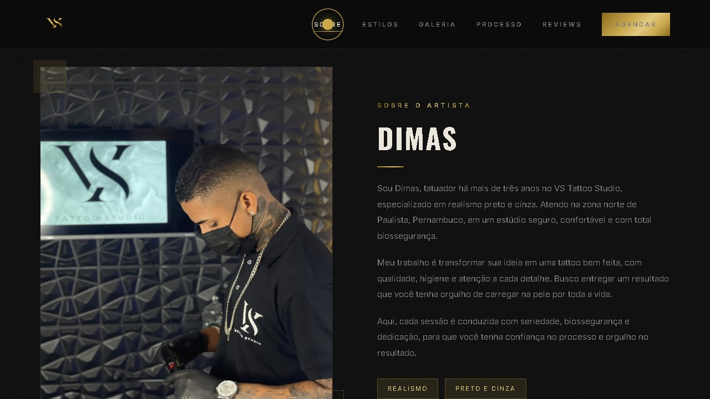
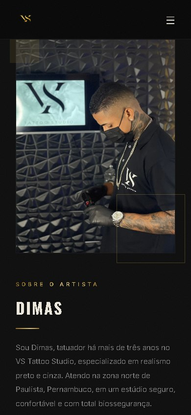

Landing page
Uma página com um objetivo só. Apresenta um serviço, uma oferta ou um lançamento e conduz o visitante até o pedido de orçamento.
Para quando você quer divulgar algo específico.
Landing pages Sites institucionais
Crio sites para pequenos negócios e profissionais autônomos que precisam mostrar o que fazem com clareza.
Quem visita entende seus serviços, vê seu trabalho e encontra um caminho simples para pedir orçamento.
Serviços
Os dois incluem design, desenvolvimento, versão para celular e publicação. O que muda é o objetivo.
Uma página com um objetivo só. Apresenta um serviço, uma oferta ou um lançamento e conduz o visitante até o pedido de orçamento.
Para quando você quer divulgar algo específico.
Tudo sobre você em um só lugar. Quem você é, o que oferece, trabalhos realizados e formas de contato, organizados para o visitante encontrar o que procura.
Para quando o cliente quer conhecer você antes de chamar.
Ainda em dúvida? Me conte o que você precisa e eu indico o formato que faz mais sentido.
Conversar sobre meu siteProjeto real
Site de um estúdio de tatuagem, feito por mim do primeiro layout à publicação.
O objetivo era apresentar o artista e o estilo do estúdio para quem ainda não o conhece. O site reúne apresentação, estilos e galeria de trabalhos, com acesso direto ao agendamento em qualquer tela.


Do primeiro layout ao site no ar.
Como funciona
Você me conta sobre o seu trabalho, quem são seus clientes e o que espera do site. Se tiver referências, pode mandar.
Envio formato, conteúdo necessário, valor e prazo. O trabalho começa só depois que tudo estiver combinado.
Organizo o conteúdo, crio o layout e desenvolvo o site, já pensando em como ele aparece no celular.
Você vê o site antes de ele ir ao ar e aponta o que quer ajustar, dentro do que foi combinado.
Coloco o site no ar no endereço combinado e confiro se tudo funciona no celular, no tablet e no computador.
Sobre mim
Sou Yago Rafael e estou construindo minha carreira em tecnologia. Estudo e trabalho com programação, automação e inteligência artificial, e hoje meu foco é criar landing pages e sites.
Gosto de transformar estudo em projeto de verdade. Cuido do design, da experiência de quem navega e do funcionamento em cada tela, porque é nos detalhes que um site fica bem feito.
Não sou uma agência. Você conversa diretamente comigo, do primeiro contato à entrega.
Em evolução
Além dos sites, estas são as frentes em que estou me aprofundando. Ainda não estão disponíveis como serviço.
Em desenvolvimento · ainda não disponíveis
Conectar processos e tarefas para reduzir trabalho manual e simplificar a rotina.
Usar inteligência artificial em atendimento, organização de informações e tarefas específicas.
Aplicações mais completas, com backend, banco de dados e login de usuários.
Conforme ficarem prontas, essas frentes passam a fazer parte das entregas.
Dúvidas frequentes
Depende do formato, do conteúdo e das funcionalidades. Depois de uma conversa rápida, envio uma proposta com escopo e valor definidos.
Depende do tamanho do projeto e de quando os materiais ficam prontos. O prazo vem na proposta, antes de começarmos.
Não. Começamos com o que você já tem e combinamos juntos o que falta. Apoio com textos e imagens pode entrar no escopo.
Sim. Todo site é desenvolvido e conferido no celular, no tablet e no computador antes da publicação.
Domínio é o endereço do site; hospedagem é o serviço que o mantém no ar. Quem contrata, em nome de quem fica e os custos são combinados antes da publicação.
É só me chamar. Avalio o pedido e combinamos escopo, prazo e valor dessa nova etapa.